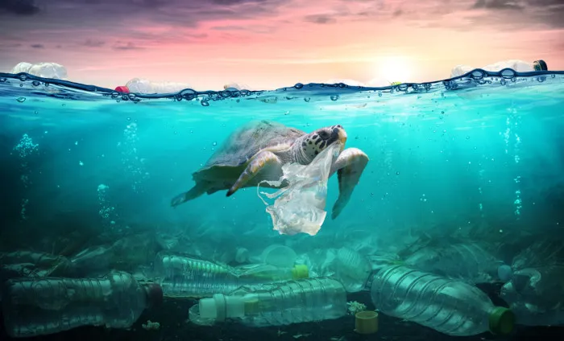
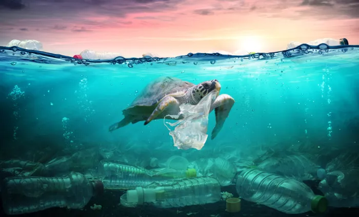

Poluição nos oceanos
Conscientizar e informar sobre a saúde dos oceanos, promovendo uma gestão sustentável.


Buscamos criar uma plataforma web interativa que monitora e reporta a saúde dos oceanos em tempo real, fornecendo dados críticos e insights para populações costeiras e empresas que dependem dos mares para existência e subsistência. A plataforma utiliza tecnologia avançada para coletar, analisar e visualizar dados ambientais, oferecendo uma ferramenta poderosa para promover a sustentabilidade dos oceanos.
Tecnologia Utilizada
Sensores IoT: Implementação de sensores IoT em áreas costeiras e zonas de pesca para coleta de dados sobre qualidade da água, temperatura, níveis de poluição e presença de vida marinha.


Satélites: Utilização de dados de satélites para monitorar grandes áreas dos oceanos, detectando mudanças ambientais e possíveis áreas de risco. Análise de Dados e Alertas
Objetivos Pretendidos
Alcançar um alto nível de conscientização e engajamento em prol da sustentabilidade dos oceanos.


Público Impactado
Populações costeiras e empresas que utilizam os mares para existência e subsistência.


Benefícios Oferecidos
Proporcionar conhecimento e ferramentas para uma gestão sustentável dos recursos marinhos.

Como a solução ajuda no dia a dia
Facilitar a implementação de práticas sustentáveis e conscientizar sobre a importância da saúde dos oceanos.
 (1).jpg) 
